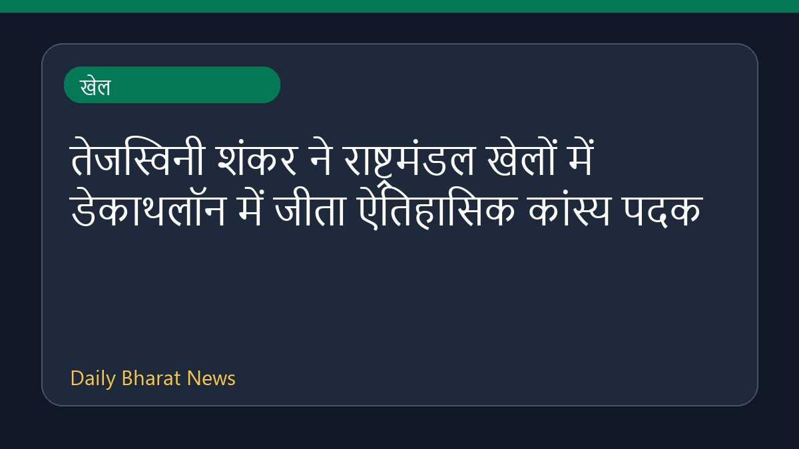

तेजस्विनी शंकर ने राष्ट्रमंडल खेलों में डेकाथलॉन में जीता ऐतिहासिक कांस्य पदक

घायल होने के बावजूद तेजोस्विन शंकर ने राष्ट्रमंडल खेलों में डेकाथलॉन स्पर्धा में कांस्य पदक जीतकर इतिहास रच दिया है। वह इस प्रतियोगिता में पदक हासिल करने वाले पहले भारतीय एथलीट बन गए हैं। इस ऐतिहासिक सफलता के बाद प्रधानमंत्री ने उन्हें बधाई दी है। इस बीच, प्रधानमंत्री नरेंद्र मोदी ने नीरज चोपड़ा की शानदार निरंतरता की भी सराहना की है। उपलब्ध जानकारी के अनुसार, इस सफलता के पीछे एथलीट की कड़ी मेहनत और समर्पण शामिल है।